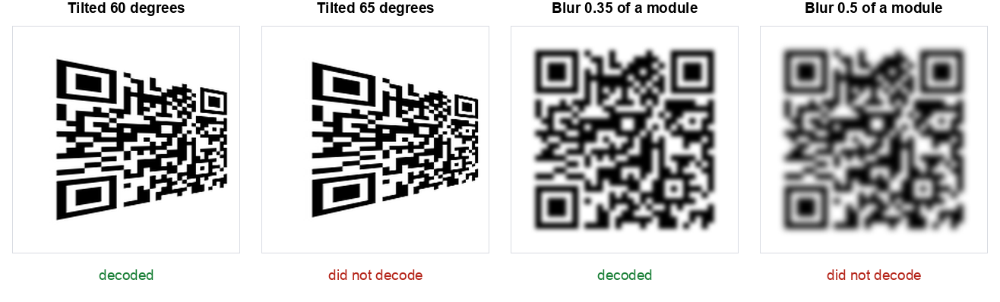

When a QR code refuses to scan, people reach for the same four explanations: the code is too small, they are holding the phone at an angle, the image is sideways, or the photo is a bit soft.
We measured all four. Three of them are close to harmless. The fourth kills a code faster than almost anything else we have tested.
The short version: a code survived being tilted 60 degrees away from the camera and shrunk to under two pixels per module, but died once the image was blurred by roughly four tenths of one module.
The short answer
| What you change | Still decodes up to | Verdict |
|---|---|---|
| Blur | 0.35 of a module width | This is the killer |
| Viewing angle (tilt) | 60 degrees off square | Very forgiving |
| Resolution | 1.7 pixels per module | Very forgiving |
| Rotation in the plane | Any angle at all | Irrelevant |

That last point is worth sitting with. You cannot look at a code and tell whether it is about to stop working. The failing blur in that figure looks perfectly readable to a person. The decoder disagreed.
Blur is the one that matters
We rendered the code large, at six pixels per module, so resolution could not be the limiting factor, then applied increasing amounts of Gaussian blur measured in module widths.
| Blur (as a fraction of one module) | Result |
|---|---|
| 0.25 | Decoded |
| 0.30 | Decoded |
| 0.35 | Decoded |
| 0.40 | Failed |
| 0.45 | Failed |
| 0.50 and above | Failed |
There is no gentle decline here. It works, and then four hundredths of a module later it does not.
Translate that into something physical. Our test code was 29 modules across, 37 including the quiet zone. Print it 20 mm wide and one module is about 0.54 mm. The failure threshold is 0.4 of that, which is roughly two tenths of a millimetre of softness. That is less than the ink spread on a cheap inkjet. It is less than the focus error of a phone camera held slightly too close.
Why this explains most real failures: when someone says a code "sometimes works", they are almost always describing a focus problem. The phone is inside its minimum focus distance, or moving, or the print is soft. Not the angle, not the size.
It also explains a specific everyday failure: holding a phone very close to a small code. Instinct says get closer so the code is bigger. But most phone cameras cannot focus below roughly 10 cm, so moving closer makes the image larger and blurrier at the same time, and blur is the thing that actually breaks the decode. Backing away usually works better than leaning in.
Angle almost never matters
We applied a perspective transform to simulate viewing the code from increasingly off to one side.
| Tilt from square on | Result |
|---|---|
| 15, 30, 40, 50 degrees | Decoded |
| 60 degrees | Decoded |
| 61 to 62 degrees | Inconsistent, one decoded and one failed |
| 63 degrees and beyond | Failed |
Sixty degrees is a lot. That is standing well off to the side of a poster, not in front of it. QR codes carry alignment patterns for exactly this reason: the decoder finds the three corners, works out the distortion, and straightens the grid mathematically before reading it.
So if someone is struggling with a code on a wall, telling them to stand square on is unlikely to be the fix. Their problem is almost certainly focus.
One caveat worth naming: our tilt was a clean geometric transform. A real code viewed at 60 degrees is also receiving less light and is partly out of focus across its depth, because the far edge is further away than the near edge. In the real world those effects arrive together, and the focus one is the dangerous one.
Size matters far less than you think
We scaled the image down until it stopped decoding, measuring in pixels per module rather than total pixels, since that is what actually determines whether a module can be distinguished.
| Pixels per module | Result |
|---|---|
| 1.7 and above | Decoded every time |
| 1.5 to 1.6 | Mostly decoded |
| 1.1 to 1.4 | Unreliable, some decoded and some failed |
| 1.0 exactly | Decoded, see the note below |
Below about 1.5 pixels per module the results stopped being a clean line and became a coin flip, and the reason is alignment rather than information. At exactly one pixel per module every module lands on exactly one pixel, so the image is a perfect miniature and decodes fine. At 1.25 pixels per module the module edges fall in the middle of pixels, each pixel becomes a grey average of two neighbours, and the decoder has to guess. More pixels, worse result.
We are reporting the one pixel per module case because it happened, not because it is useful. You will never hit that alignment by accident. The honest working figure from this test is 1.7 pixels per module, above which everything decoded.
Put that in practical terms. Our 37 module image needs about 63 pixels square to be readable. A screenshot on any modern phone is over a thousand pixels wide. If you are trying to read a code from a screenshot, the image is essentially never too small, which is why the advice to "take a bigger screenshot" so rarely helps. If a screenshot will not read, the code was already soft, or something is covering part of it.
This is a different question from how large to print a code, where the camera, the distance and the lighting all get a say. Our print sizing guide covers that separately.
Rotation does not matter at all
We rotated the code 15, 45, 90, 135 and 180 degrees in the plane of the image. Every single one decoded.
This one is not a surprise once you know how the format works, but it comes up constantly, so it is worth stating plainly: a QR code has no up. The three large corner squares tell the decoder which way round it is, which is precisely why there are three of them and not four. Printing a code upside down on a menu costs you nothing.
What to actually do when a code will not scan
In the order we would actually try them, based on what the numbers above say is likely:
- Move further away, not closer. Most phones cannot focus closer than about 10 cm. Back off to 20 or 30 cm and let the camera focus. This is the single most effective fix and the least intuitive.
- Hold still for a second. Motion blur and focus blur do the same damage. Phones scan continuously, so one still moment is often all it needs.
- Add light, but not glare. Low light makes the camera slow its shutter, which reintroduces motion blur. A direct reflection on a laminated card is worse than dim light.
- Check the three corners. If one is scuffed, covered by a sticker or cropped off, the code is unreadable no matter what you do. We measured that separately in our damage test, where one missing module in a corner was fatal while 19% of the area covered in the middle was survivable.
- Check the white border. A code cropped flush to its edge loses the quiet zone the decoder uses to find it. Designers crop this away constantly.
- Only then worry about angle and size. By this point you have covered what the data says is actually going wrong.
You can also run this whole test on your own code. Our stress test tool applies the same four degradations described here to any image you give it and reports where yours breaks.
If you have the code as a file rather than on a wall, you can skip the guessing. Our QR code scanner reads an image in the browser and shows you the content as text, so you find out whether the code is readable at all, and what it contains, before you tap anything. It uses the same decoder library we used for this test.
How we tested this
Method, so you can judge the numbers or repeat them:
- One code throughout: a 34 character URL at error correction level M, 29 modules square, 37 including the four module quiet zone.
- One decoder: jsQR, the same library our own scanner runs, given each image once.
- Blur measured in module widths rather than pixels, so the figure transfers to any size. Applied at six pixels per module so resolution was never the limit.
- Tilt applied as a perspective transform, then narrowed in one degree steps around the failure point.
- Resolution measured in pixels per module, tested with both smooth and hard resampling, since the two disagree below 1.5.
- Every result compared character by character against the original URL. A partial read counts as a failure.
Two honest limitations. First, we gave the decoder one clean synthetic image per test. A phone gets roughly thirty frames a second, refocusing between them, so in practice it retries constantly and will often succeed where our single shot failed. Second, a real camera adds sensor noise, uneven lighting and lens softness that our images do not have. The direction of the finding holds, but treat the exact thresholds as the best case rather than a promise.
The reason we still think the numbers are useful is the ranking rather than the precise figures. Blur failed at 0.4 of a module while tilt survived to 60 degrees. That gap is so large that no amount of real world messiness reverses it.
The summary
Almost everything people blame for a failed scan is fine. Angle is fine to 60 degrees. Rotation is completely irrelevant. Resolution is fine down to under two pixels per module, which no screenshot ever reaches.
It is nearly always focus. Blur of four tenths of one module was enough to kill a code that shrugged off a 60 degree tilt. Step back, hold still, add light. In that order.
If you are making codes rather than scanning them, the same finding points somewhere specific: print larger than feels necessary, because a bigger module makes the same amount of blur a smaller fraction of it. That is the whole reason print size matters, and it is covered in our sizing guide. You can also check any code you have made against our scanner before it goes anywhere near a printer.